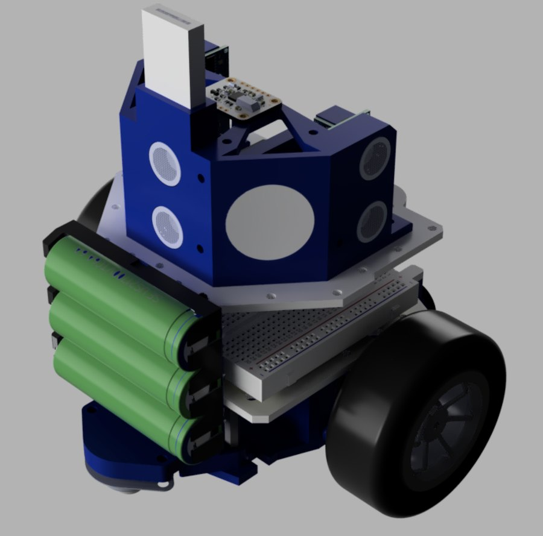
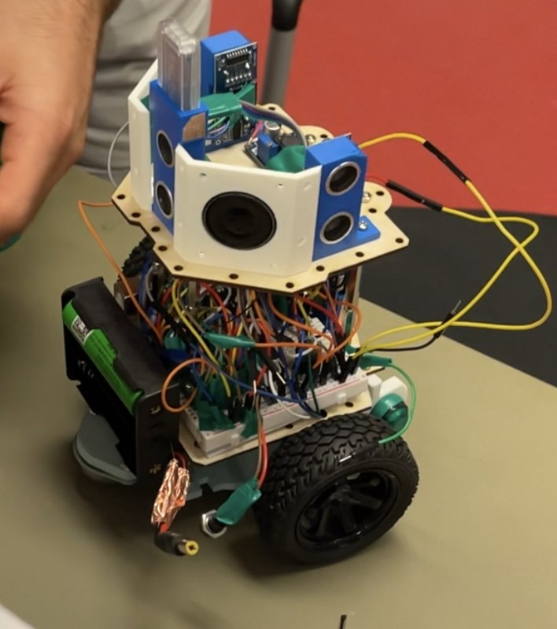
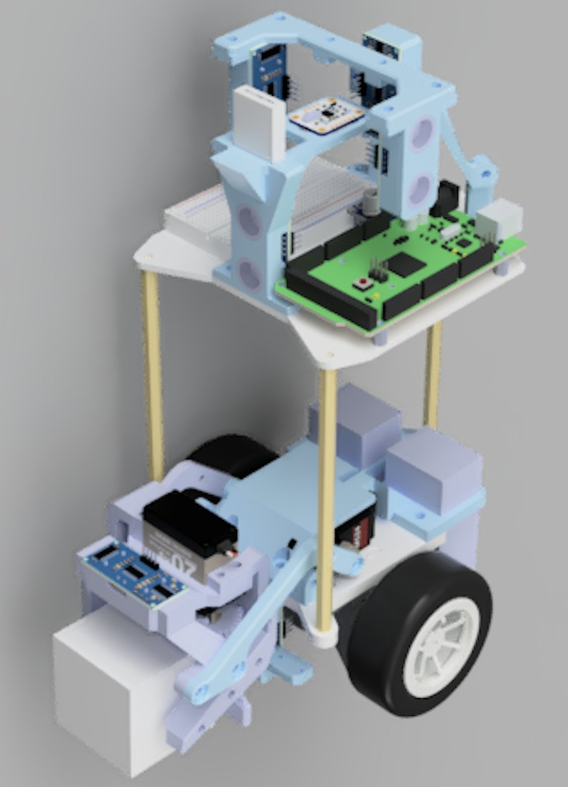
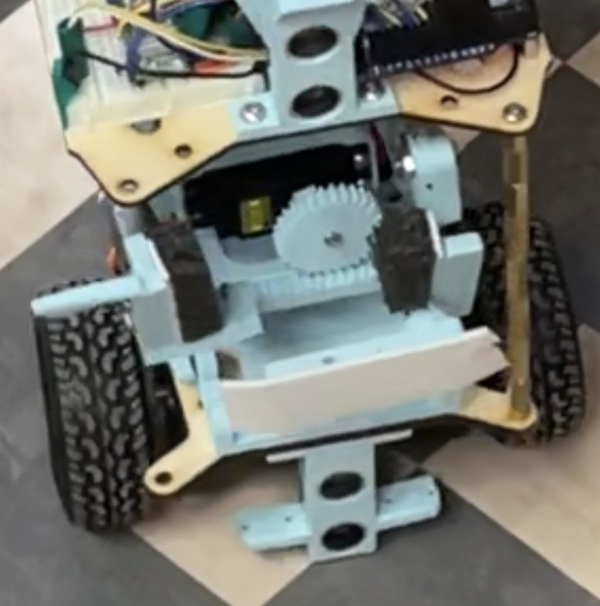

Three robots in one semester
The software above was written and tested in a MATLAB simulator for weeks before any of it ran on hardware, which is why it is so suspicious of the hardware. That turned out to be the correct posture, because the first robot did not survive its first competition.





The electronics ceiling was pin count, not compute
The first build put every ultrasonic on a shared echo pin to save I/O on an Arduino Uno. Sharing serialised the readings and let the echoes interfere; a diode per pin did not fix it. The Uno also had no room for the MOSFETs the speakers and high-voltage LEDs needed, each of which costs another digital pin.
The fix was to stop economising: an Arduino Mega, one trigger and one echo pin per sensor, and the decorative outputs deleted. The wiring then fitted on a single breadboard and needed no further modification for the rest of the project. It is the same ceiling the LED cube ran into — I/O and interrupt budget, not clock speed.
Two halves that barely know about each other
The Arduino is deliberately stupid. It accepts primitives over Bluetooth — read the left ultrasonic, turn this many degrees — and answers when done. Everything above that lives in MATLAB on a laptop: wall-following, localization, navigation, block handling.
The payoff is that the simulator speaks the same primitives, so the same MATLAB runs in simulation and on the robot with nothing swapped. That is why weeks of untested code worked on contact with hardware, and it is the same sim-and-real-share-the-logic split I have used on every project since.
| Built | Changed, and why |
|---|---|
| 205 mm diameter | → 170 mm; clearance in a 12-inch maze |
| Battery as structure | → modular decks; assembly and access |
| Superglued wiring | → properly seated; the glue conducts hot |
| Arduino Uno | → Mega; pins, not speed |
| Shared ultrasonic echo pin | → one trig/echo each; interference |
| Four-bar linkage gripper | → rack and pinion; rigidity, part count |
| Ultrasonic block sensing | → recommended time-of-flight (VL6180) |
| Distrust the IMU | → trust it, gyro-only; worth 1.2 moves |
How it actually went
Milestone one: not attempted. The short happened hours before the slot; the team submitted the working simulation instead.
Milestone two: the redesigned robot completed the maze on its first trial in three minutes, faster than expected, helped by a starting tile it could localize within.
Milestone three: the gripper snapped minutes before the first trial and was epoxied back together. The block was picked up successfully — better than expected, given the block-finding code had never run in the physical maze — then dropped after leaving the loading zone because the servos jittered. The robot carried on to the drop-off anyway. On the second trial, a change made for clearance (raise the gripper before turning) backfired and it set the gripper down onto the block; once that was moved aside it picked up and delivered in about four minutes with no further intervention.
The report's own conclusion is a scheduling one, and it is the right one: every failure above traces to hardware arriving too late to test the software against.